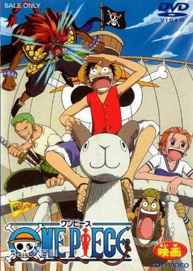

故事背景
蒙奇·D·路飞在遥远的路途上找寻着志同道合的伙伴，进入“伟大的航道”，目标是成为“海贼王”。
-
东海篇
蒙奇·D·路飞自小就立志要成为“海贼王”。17岁时他出海之后，接续遇见了海贼猎人罗罗亚·佐罗、航海士奈美、狙击手撒谎布、厨师山智等人并结为伙伴。他们组成了草帽海贼团准备进入伟大的航道来到罗格镇。
-
空岛篇
离开阿拉巴斯坦王国之后，草帽海贼团撞见一艘从天而降的大船，同时纪录指针竟然向上指向天空。对空岛产生兴趣的路飞靠着上升海流前往空岛。解决了空岛居民和香狄亚一族长达四百年的战争。
-
长环长岛篇
草帽海贼团遇见专门以Davy Back Fight游戏抢夺其它海贼团船员的银狐福克西，船医乔巴被其抢走，两个海贼团展开了对决。
人物介绍
草帽海贼团成员
剧场版
海贼王剧场版是根据《海贼王》漫画改编，由东映原创的一系列动画电影。
-

- 航海王：黄金岛冒险
- 上映时间：2000-03-04
- 传说中的黄金大盗乌南，带着大批黄金隐居到某座岛屿，之后生死不明，向着伟大航道持续前进的的路飞一行人，遇到了梦想成为乌南的部下的少年托比欧，他因为不愿继承爷爷经营的甜不辣摊，和爷爷闹的很不愉快，而爱黄金成痴的海贼艾拉德哥也正窥视著乌南埋藏的黄金……
-

- 航海王：发条岛的冒险
- 上映时间：2001-03-03
- 草帽海贼团的船“黄金梅利号”在悠闲度假大伙眼前被偷走了，后来他们在寻找船的途中遇到一对小偷兄弟，从他们口中打听到小偷是现在统治著发条岛的“扑克牌海贼团”，而小偷兄弟正好也要去偷取岛上著名的“钻石钟”，双方的目标一致，决定联手攻进扑克牌海贼团的大本营，但可怕的头目“大熊王”手中却掌握著攸关整座发条岛生死的巨大发条……
-

- 航海王：珍兽岛的乔巴王国
- 上映时间：2002-03-02
- 在伟大的航道上，路飞一行人朝着目的地前进…这一次所要去的地方是娜美前阵子所得到手的地图珍兽岛，传说有的宝物在那里。在大家像平时一样在船上悠闲的做着自己的事时，海中的火山爆发，海水向上喷发，把一座小岛围了起来，原来，珍兽岛已经到了。
-

- 航海王：死亡尽头的冒险
- 上映时间：2003-03-01
- 草帽海贼团来到汉 那巴尔，吃饭的时候奈美注意到老板正和某位海贼在做可疑的交易，一问之下才知道，地下赌场正在举办每年一次的死亡海上竞赛，而且今年的奖金高达3亿贝里，为了寻求奖金和冒险的一行参加决定参加这场比赛。
Voice actor
声优是一部作品的灵魂，没有声优的动画不过是一具空壳。